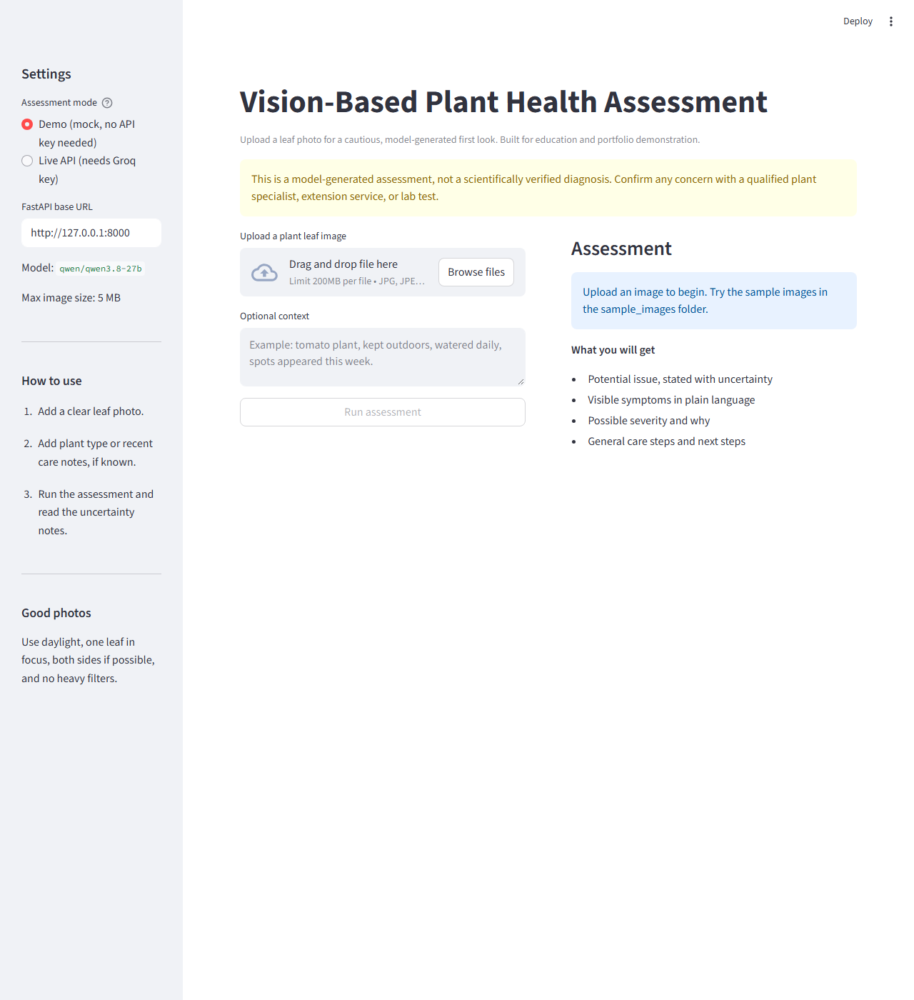
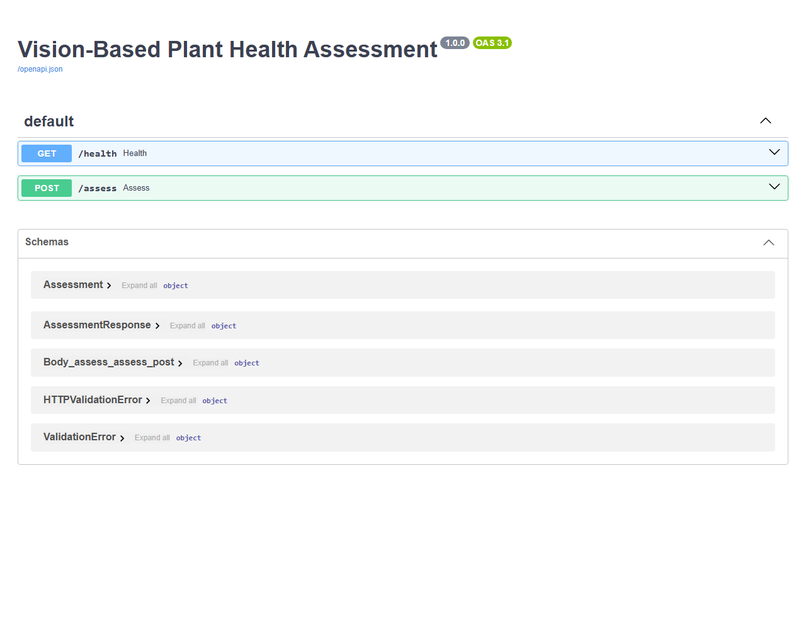

Independent project · Applied vision API
Vision-Based Plant Health Assessment
A small web app that accepts a plant leaf photo and returns a cautious first look at visible symptoms, possible severity, and general care steps. It uses a pretrained vision model through the Groq API. No model was trained or fine-tuned for this project.
Every result is model-generated and is not a verified diagnosis. Confirm any concern with a qualified plant specialist, a local extension service, or a lab test.
Live Demo Availability: A public live demo is not available, as this project does not have hosted API access for public use. You can download the source code below and run it on your own computer with your own Groq API key. Demo mode also works with no key.
Overview
Plant owners often notice spots, yellowing, or wilting without knowing how to describe what they see or what to check next. This app helps a user organise those observations from a photo, while stating clearly that the result is a first look, not a diagnosis.
The interface is built with Streamlit and the backend with FastAPI. A demo mode returns fixed mock output, so the full flow can be tried with no API key and no image sent to a model. Live mode sends the image to Groq and returns a structured result.
Model and API integration
The system does not train, fine-tune, or evaluate a custom model. It calls a pretrained vision-language model hosted by Groq. The work in this project is the application around that model: image validation, prompt design, API integration, response parsing, the user interface, safety wording, and tests. No training data was collected and no model weights were created.
- Provider: Groq, using its OpenAI-compatible chat completions API through the official Groq Python SDK.
- Default model:
qwen/qwen3.8-27b, set by theGROQ_MODELenvironment variable. The name was checked against the Groq vision documentation on 2026-10-20. - Request: the validated image is encoded as a base64 data URL and sent with a prompt that asks for JSON only, plain symptom descriptions, and uncertainty language. Temperature is 0.2 and the completion limit is 1024 tokens.
- Response: the reply is parsed into a fixed schema. If it is not valid JSON, the raw text is kept as a low confidence summary. Results are labelled by a
sourcefield, eithermockorlive. - Key handling: the key is read only from the
GROQ_API_KEYenvironment variable or a local.envfile. It is not in the source code or in the download. - Endpoints:
GET /healthreports status and the model name.POST /assessvalidates the upload, then returns mock output or a live model response.
The reference repository at shukur-alom/leaf-diseases-detect (MIT License) was inspected for its concept and API approach. This application was written independently, with no code, images, or text copied. Its example model was retired by Groq on 2026-07-17, so a currently supported model was selected from the Groq documentation instead.
Screenshots
These are genuine screenshots of the application running locally. Neither shows a live model result, because live inference was not verified for this project.


/health and /assess endpoints.What was verified
Demonstrated functionality
- The health endpoint returned status ok, the model name, and the 5 MB limit.
- A mock assessment over HTTP returned
source: mockwith correct image details for a sample PNG. No image was sent to a model in that test. - The Streamlit interface loaded in a browser and showed the upload flow, the demo and live mode choices, the model name, and the disclaimer.
- Thirteen automated tests pass. They cover image validation, mock labelling, missing key handling, request shape, response parsing, and both API endpoints.
Not verified
- Live vision inference was not verified. No Groq key was configured during the final check, and live mode returned HTTP 503 with a message explaining that the key is not set. That is the intended behaviour when no key is present.
- Disease identification accuracy is unverified. No labelled test set was used, and no accuracy figure exists for this project. Demo output shows the software flow only. It is not evidence that the model identifies plant disease correctly.
Run it locally
The download contains a README with full setup instructions. In short:
- Unzip the source code and create a Python virtual environment (Python 3.11 or later).
- Install the dependencies with
pip install -r requirements.txt. - For live mode, copy
.env.exampleto.envand add your own Groq key. Demo mode needs no key. - Start the API with
uvicorn api:app --reload --port 8000, then start the interface withstreamlit run app.pyin a second terminal.
Limitations and privacy
- The model can invent a disease name, miss a real problem, or sound sure when it is not.
- One photo is weak evidence. Light, blur, background, and leaf angle change the result.
- Disease, pests, watering, light, and nutrient problems can look alike, so similar symptoms do not point to one cause.
- Severity is a rough visual guess, not a measurement. The app cannot check roots or soil, or use lab methods.
- The sample images in the download are synthetic drawings for upload testing. They are not photos and not evidence of real disease.
- Hosted model names change over time. If the default model is retired, set
GROQ_MODELto a currently supported vision model from the Groq documentation.
In live mode, your image and any context text are sent to Groq, a third party, for processing. Demo mode sends nothing to any external service. Uploads are validated in memory and are not saved to disk by the API, and there is no account system or image archive. Do not upload images you do not want processed by a third party API.
The downloadable archive contains the Python application, tests, requirements, documentation, sample images, screenshots, and this case study text. It does not contain a .env file, any API key, or caches.